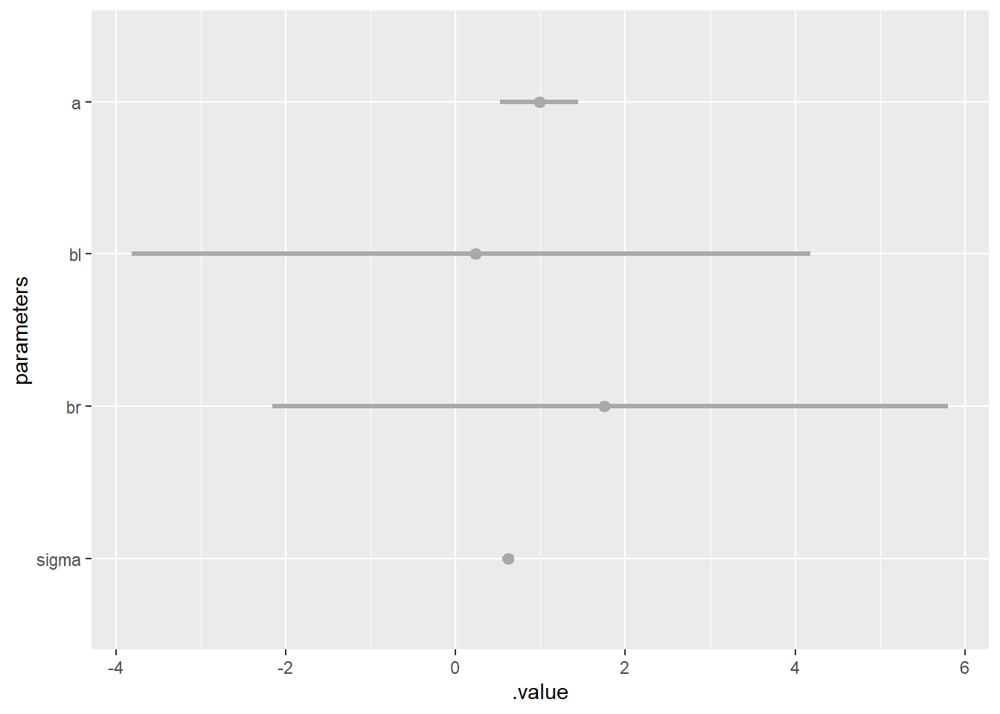
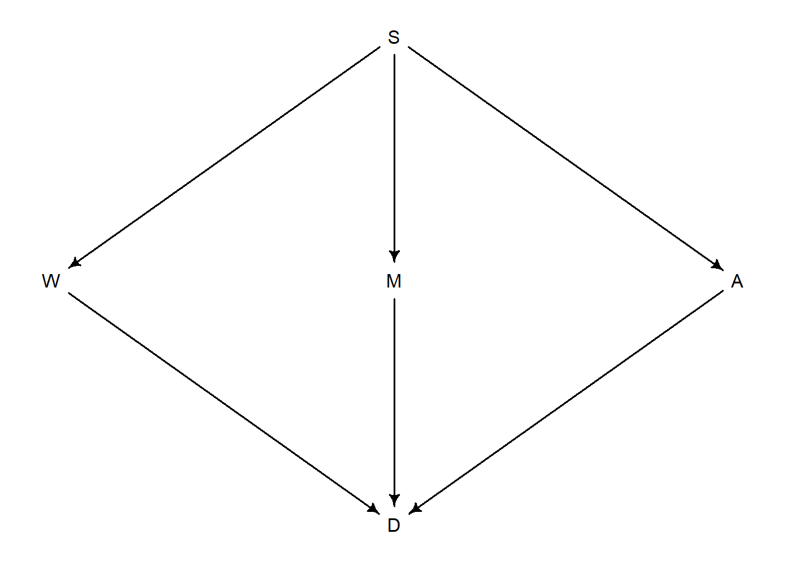

Chapter 6 The Haunted DAG & The Causal Terror
6.1 Chapter Notes
Figure 6.1 Selection Bias

Parameters estimates for effect of leg length on height.

Figure 6.2 Posterior of height~leg Model
Figure 6.3

Primate Milk DAG
Simulating Colliinearity

Here’s my very rough attempt at explaining to myself why conditioning on fungus makes treatment appear to have a small positive effect.
If fungus is present we may have:
- treatment present and moisture present
- treatment absent and moisture either way (leaning towards present)
If fungus is absent we may have:
- treatment absent and moisture absent
- treatment present and moisture either way (leaning towards absent)
So once we know fungus there is a weak positive correlation between treatment and moisture. Since moisture is good for plant growth, this means a positive relationship between treatment and growth.
6.2 Questions
6E1
Question
List three mechanisms by which multiple regression can produce false inferences about causal effects.
Answer
Multicollinearity - regression on highly correlated predictors can produce misleading parameters, as in the leg, or primate milk examples.
Post-treatment bias - regression on post-treatment effects can make it appear that the treatment is not effective, as in the fungus example.
Collider bias - regression on a collider can create the appearance of an association between two variables that does not exist.
6E3
Question
List the four elemental confounds. Can you explain the conditional dependencies of each?
Answer
- Fork - X and Y are independent, once we condition on Z.
- Pipe - X and Y are independent, once we condition on Z.
- Collider - Conditioning on Z creates an association between X and Y.

- Descendant - Conditioning on D partly conditions on Z.
6E4
Question
How is a biased sample like conditioning on a collider? Think of the example at the open of the chapter.
Answer
Using the publishing example at the beginning of the chapter, we know that there is no causal relationship between trustworthiness and newsworthiness (because that’s how the simulation is constructed). However, both cause selection for publication, creating a collider. We saw that sampling only the published papers created a negative correlation between the two predictors.
Conditioning on publication would have the same effect - once we know newsworthiness and publication status, we can deduce some information about trustworthiness, or vice versa. For example, a study that was published but had low newsworthiness must be quite trustworthy. A study with high trustworthiness that wasn’t published is probably not very newsworthy.
Conditioning on the collider has the same result as only sampling from papers that were published: the creation of a spurious association.
6M1
Question
Modify the DAG on page 186 to include the variable V, an unobserved cause of C and Y: C ← V→ Y. Reanalyze the DAG. How many paths connect X to Y? Which must be closed? Which variables should you condition on now?
Answer
Here’s the original DAG:
Now we add the unobserved V:
Previously, we could condition on either A or C to find the direct casual effect of X on Y. Now C is a collider, so we should condition on A.
The dagitty package corrobates this:
adjustmentSets( dag_6M1B , exposure="X" , outcome="Y" )## { A }6M2
Question
Sometimes, in order to avoid multicollinearity, people inspect pairwise correlations among predictors before including them in a model. This is a bad procedure, because what matters is the conditional association, not the association before the variables are included in the model. To highlight this, consider the DAG X → Z → Y. Simulate data from this DAG so that the correlation between X and Z is very large. Then include both in a model predicting Y.
Do you observe any multicollinearity? Why or why not? What is different from the legs example in the chapter?
Answer
Modifying the leg example:
N <- 1000
set.seed(909)
Y <- rnorm(N,10,2)
Y_prop <- runif(N,0.4,0.5)
Z <- Y_prop*Y + rnorm( N , 0 , 0.02 )
Z_prop <- runif(N,0.8,0.9)
X <- -Z_prop*Z + rnorm( N , 0 , 0.02 )
data_6M2 <- bind_cols(X=X,Z=Z,Y=Y)
ggpairs(data_6M2)
set.seed(100)
m6M2 <- quap(
alist(
Y ~ dnorm( mu , sigma ) ,
mu <- a + bX*X + bZ*Z ,
a ~ dnorm( 10 , 100 ) ,
bX ~ dnorm( -3 , 10 ) ,
bZ ~ dnorm( 2 , 10 ) ,
sigma ~ dexp( 1 )
) , data=data_6M2 )
ggplot(data=precis(m6M2))+
geom_pointrange(aes(x=rownames(precis(m6M2)),y=mean,ymin=`5.5%`,ymax=`94.5%`))+
geom_hline(yintercept = 0,col="red")+
xlab("parameter")+
coord_flip()## Warning in sqrt(diag(vcov(model))): NaNs produced
## Warning in sqrt(diag(vcov(model))): NaNs produced
## Warning in sqrt(diag(vcov(model))): NaNs produced
## Warning in sqrt(diag(vcov(model))): NaNs produced
## Warning in sqrt(diag(vcov(model))): NaNs produced
## Warning in sqrt(diag(vcov(model))): NaNs produced
## Warning in sqrt(diag(vcov(model))): NaNs produced
## Warning in sqrt(diag(vcov(model))): NaNs produced
## Warning in sqrt(diag(vcov(model))): NaNs produced## Warning: Removed 1 rows containing missing values (geom_segment).
In the legs example, the model was very uncertain about the parameter values for both legs. This is not the case here, the parameter estimate for the influence of Z is about as expected, 2-2.5. The model has correctly identified that the only influence of X on Y is through Z, and so produces parameter estimates for X much smaller than expected. We have a pipe, and including Z blocks the path from X to Y, but we don’t have the problems with identifiability that we had in the legs example.
There is no way to tell this scenario apart from the legs example simply from looking at the pairwise correlations.
6M3
Question
Learning to analyze DAGs requires practice. For each of the four DAGs below, state which variables, if any, you must adjust for (condition on) to estimate the total causal influence of X on Y.
Answer
- We should condition on Z to block the backdoor path.
drawdag(dag_6M3.1)
adjustmentSets(dag_6M3.1,exposure = "X",outcome = "Y",effect = "total")## { Z }- We no longer want to condition on Z - it is a collider.
drawdag(dag_6M3.2)
adjustmentSets(dag_6M3.2,exposure = "X",outcome = "Y",effect = "total")## {}- We no longer want to condition on Z - it is a collider.
drawdag(dag_6M3.3)
adjustmentSets(dag_6M3.3,exposure = "X",outcome = "Y",effect = "total")## {}- We don’t want to condition on Z here because we are looking for the total casual influence of X on Y - one route of this influence goes through Z. We should condition on A however, to block the backdoor path.
drawdag(dag_6M3.4)adjustmentSets(dag_6M3.4,exposure = "X",outcome = "Y",effect = "total")## { A }6H1
Question
Use the Waffle House data to find the total causal influence of number of Waffle Houses on divorce rate. Justify your model or models with a causal graph.
Answer
Looking through the available variables, I think I want to consider the following: * Number of Waffle Houses (W) * Divorce rate (D) * Whether we’re in the South (S) * Marriage rate (M) * Median age of marriage (A)
Here’s my proposed DAG:
dag_waf <- dagitty( "dag {S -> W; S -> M; S->A; W -> D ; M -> D; A -> D;}")
coordinates(dag_waf) <- list( x=c(W=0,S=1,M=1,D=1,A=2) , y=c(S=0,W=1,M=1,A=1,D=2) )
drawdag(dag_waf )adjustmentSets(dag_waf,exposure = "W",outcome = "D",effect = "total")## { A, M }
## { S }So we need to include S in the model, to block the backdoor path through A and M.
After loading the data, standardising, and doing some prior simulation, I have the model below:
set.seed(100)
m6H1 <- quap(
alist(
Divorce ~ dnorm( mu , sigma ) ,
mu <- a[South] + bW*WaffleHouses,
a[South] ~ dnorm( 0 , 0.6 ) ,
bW ~ dnorm( 0 , 0.2 ) ,
sigma ~ dexp( 1 )
) , data=data_waf )
ggplot(data=precis(m6H1,depth = 2))+
geom_pointrange(aes(x=rownames(precis(m6H1,depth = 2)),y=mean,ymin=`5.5%`,ymax=`94.5%`))+
geom_hline(yintercept = 0,col="red")+
xlab("parameter")+
coord_flip()
This is consistent with the number of Waffle Houses having no causal effect on the divorce rate.
6H2
Question
Build a series of models to test the implied conditional independencies of the causal graph you used in the previous problem. If any of the tests fail, how do you think the graph needs to be amended?
Does the graph need more or fewer arrows? Feel free to nominate variables that aren’t in the data.
Answer
impliedConditionalIndependencies(dag_waf)## A _||_ M | S
## A _||_ W | S
## D _||_ S | A, M, W
## M _||_ W | SWe’ll first test that the divorce rate is independent of being in the South, conditional on number of waffle houses, median age of marriage, and marriage rate.
set.seed(100)
m6H2.1 <- quap(
alist(
Divorce ~ dnorm( mu , sigma ) ,
mu <- a[South] + bW*WaffleHouses + bM*Marriage + bA*MedianAgeMarriage,
a[South] ~ dnorm( 0 , 0.6 ) ,
bW ~ dnorm( 0 , 0.2 ) ,
bM ~ dnorm( 0 , 1 ) ,
bA ~ dnorm( 0 , 1 ) ,
sigma ~ dexp( 1 )
) , data=data_waf )
m6H2.1_post <- post <- extract.samples(m6H2.1)
m6H2.1_post$diff_south <- m6H2.1_post$a[,1] - m6H2.1_post$a[,2]
ggplot(data=precis( m6H2.1_post , depth=2 ))+
geom_pointrange(aes(x=rownames(precis( m6H2.1_post , depth=2 )),y=mean,ymin=`5.5%`,ymax=`94.5%`))+
geom_hline(yintercept = 0,col="red")+
xlab("parameter")+
coord_flip()The values of the diff_south parameter are consistent with the conditional independence, but I’m not completely happy that I’ve caught all the ways that being in the South can influence the divorce rate. Perhaps I should add an arrow directly from the South to the divorce rate, or add in an unobserved variable to stand in for cultural/ religious attitudes towards divorce.
We’ll test one more conditional independence, one that I think is more likely to be true. Let’s see if the median age of marriage is independent of the number of waffle houses, once we condition on being in the south.
set.seed(100)
m6H2.2 <- quap(
alist(
MedianAgeMarriage ~ dnorm( mu , sigma ) ,
mu <- a[South] + bW*WaffleHouses,
a[South] ~ dnorm( 0 , 0.6 ) ,
bW ~ dnorm( 0 , 1 ) ,
sigma ~ dexp( 1 )
) , data=data_waf )
m6H2.2_post <- extract.samples(m6H2.2)
m6H2.2_post$diff_south <- m6H2.2_post$a[,1] - m6H2.2_post$a[,2]
ggplot(data=precis( m6H2.2_post , depth=2 ))+
geom_pointrange(aes(x=rownames(precis( m6H2.2_post , depth=2 )),y=mean,ymin=`5.5%`,ymax=`94.5%`))+
geom_hline(yintercept = 0,col="red")+
xlab("parameter")+
coord_flip()The parameter bW is estimated to be quite close to zero.
6H3
Question
Use a model to infer the total causal influence of area on weight. Would increasing the area available to each fox make it heavier (healthier)?
You might want to standardize the variables. Regardless, use prior predictive simulation to show that your model’s prior predictions stay within the possible outcome range.
Answer
We don’t need to condition on any other parameters since we’re looking for the total causal effect.

## {}
Unexpectedly, the total causal impact of area on weight appears to be zero, or slightly negative. Increasing area would not make foxes heavier.
6H4
Question
Now infer the causal impact of adding food to a territory. Would this make foxes heavier? Which covariates do you need to adjust for to estimate the total causal influence of food?
Answer
We don’t need to condition on any other parameters assuming the DAG we’re given is correct.
## {}
The total causal impact of food on weight again appears to be negative. Increasing food would not make foxes heavier.
6H5
Question
Now infer the causal impact of group size. Which covariates do you need to adjust for? Looking at the posterior distribution of the resulting model, what do you think explains these data? That is, can you explain the estimates for all three problems? How do they go together?
Answer
Now we have to condition on food to block the backdoor path.
## { F }
We see that the causal impact of group size is negative, and that the direct effect of food is zero or slightly positive. It is at least not so negative as the total causal effect.
I’d suggest that what’s happening here is that the main effect of an increase in food (either directly or by an increase in area) would be to increase group size, which has a detrimental effect on weight. This effect seems to overwhelm any direct effect of increasing food on weight.